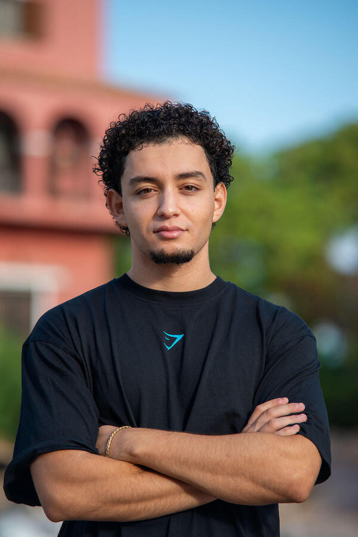
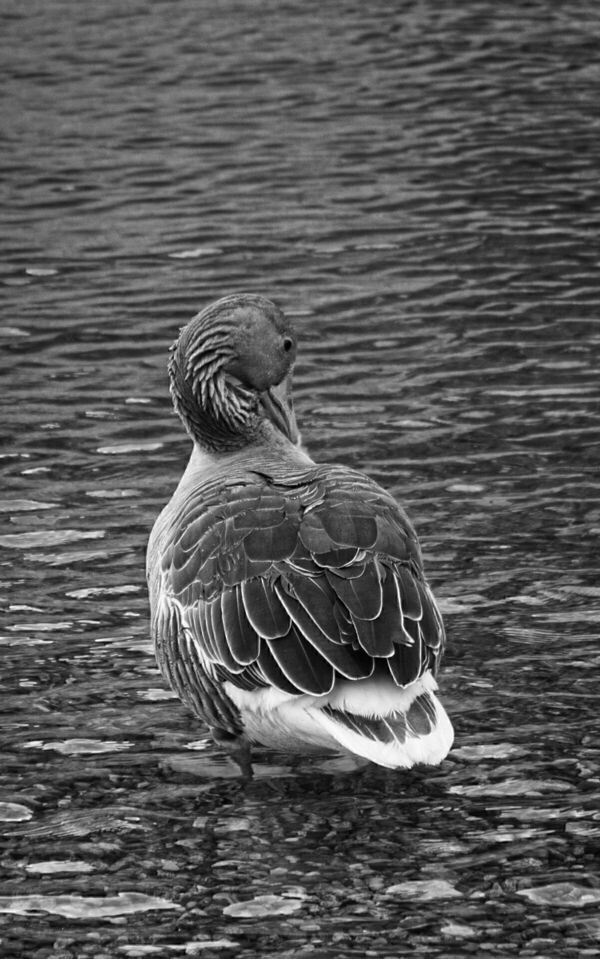
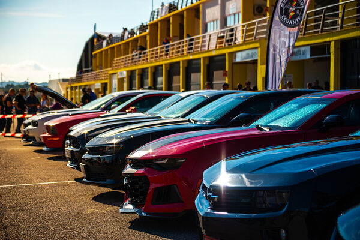
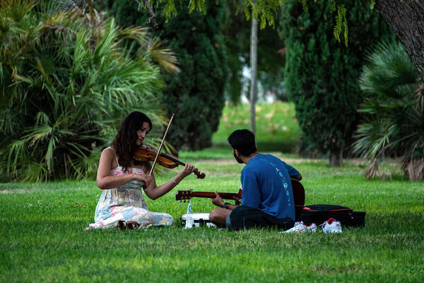
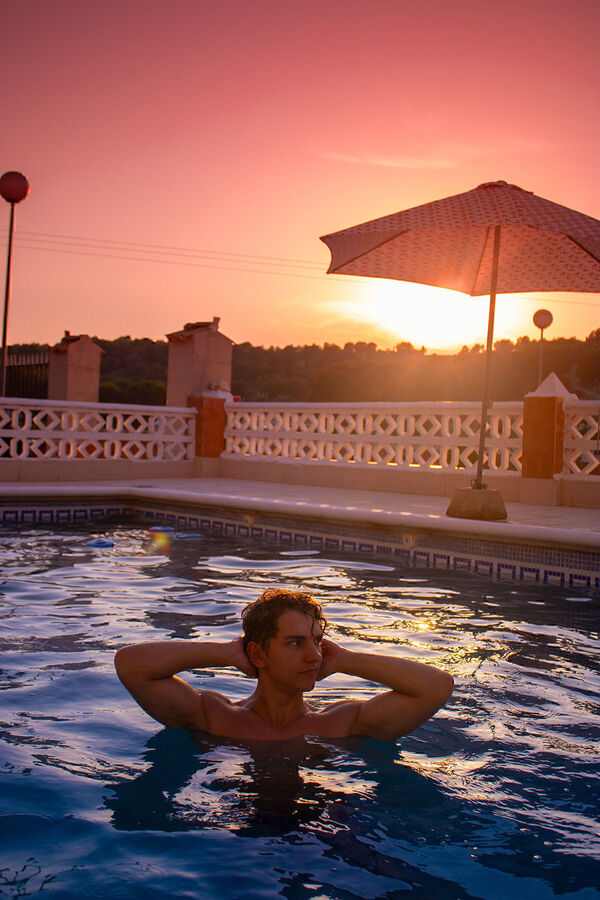
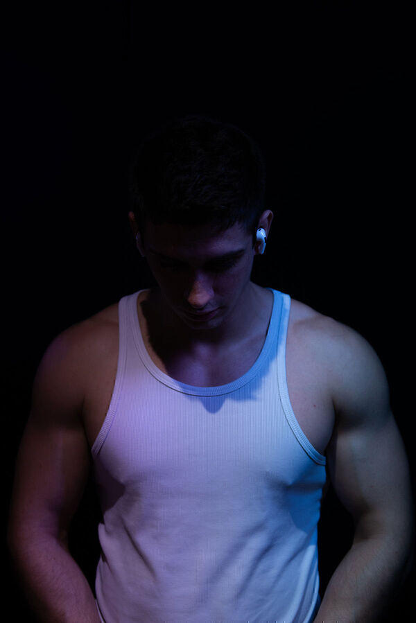
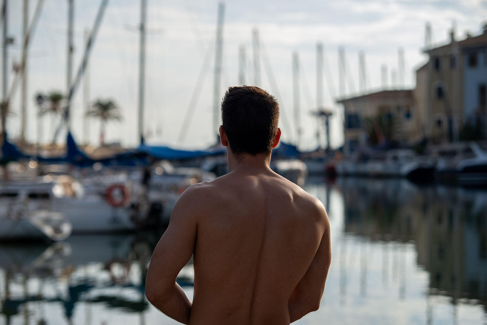

Javier Photography | Fotógrafo en Valencia
"Capturando la esencia de momentos fugaces."
Contáctame

El Arte de lo Esencial
Javier Fernández Ramos @javier.fzr, fotógrafo profesional en Valencia. Me especializo en capturar la realidad desde una perspectiva limpia y directa, buscando siempre la fidelidad en cada imagen.
Mi trabajo se define por la atención al detalle y la capacidad de capturar las cosas de la manera que las quieres ver. Con experiencia en retratos, eventos y deportes, ofrezco una visión técnica y profesional para cada proyecto.

Galería Destacada










Testimonios

"Increíbles fotos de retrato que contraté. Javier captó exactamente lo que quería."
Deportista
"Las fotos de mi partido de tenis son espectaculares. La rapidez de entrega y la calidad me fascinó."
Jugador de Tenis
"La sesion de fotos de gimnasio de me hizo Javier fueron espectaculares y con mucha calidad."
Modelo gymHablemos de tu Proyecto
¿Buscas fotógrafos en Valencia para tu próximo evento o sesión? Puedes enviarme un mensaje rápido aquí o visitar mi página dedicada para reservas.
Página de Reserva y Tarifas
Contáctame